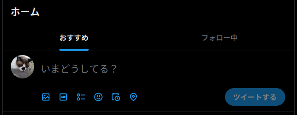

引きこもる Twitter

また Twitter が Web UX を変えやがった（怒）
少し前はこんな感じだったのよ。

右上のボタンをクリックすることで「ホーム」と「最新ツイート」を切り換えることができた。 それがこんな感じになった。

{kind=link}
ボタンがタブに変わっただけだと思うでしょ。 違うのよ。 「フォロー中」タブを表示してもブラウザで Twitter を開き直す度に「おすすめ」に戻される。 状態を保持してくれないの。 面倒！
もうひとつ。
先週から結構騒ぎになってるみたいだけど，サードパーティのアプリを締め出すことにしたようだ。
前述の Web UX の変更と併せて考えると Twitter Blue ユーザを優遇するための措置に見える。 Tweets を時系列に並べたら Twitter Blue ユーザ優先の TL にならないからね。 なかなか姑息なことをする。
思へらく Twitter は本格的に walled-garden に引きこもる方向に舵を切ったようだ。
スタートアップやその頂点にあるユニコーン企業で最も重要なのは，提供するプロダクトで何を成すか，である。 すなわち，その企業・組織が掲げる「ミッション」は何かということだ。 そして，それを支える「文化」が最も重要。
でも，企業・組織のオーナーが変われば文化も変わる。 これは仕方ない。 その過程で大幅な「再構築」が行われ，一時的に価値を落とすこともあるだろう。 それでも背骨となるミッションが従業員や顧客に揺るぎなく示されているなら，そのプロダクトの未来にみんな期待できる。
ミッションを達成する手段として利益を得ようとするなら分かる。 お金は大事。 でも，多くの人から見て現在の Twitter は掲げるべきミッションを見失っているように見えるのではないだろうか。 酷くチグハグで行きあたりばったりの印象。 手段としての銭儲けが目的にすり替わっている感すらある。 そんな状態で果たしてユーザは Twitter の何に期待するというのか。 それなら Mastodon 連合のどこかに寄付するほうがマシって話にならないか？
さて，2023年の Twitter はどこへ行くのか。
2022-01-26 追記
その後 Web UI で「フォロー中」タブ選択状態が保持されない問題（？）は修正（？）されたようだ。 現在はブラウザを閉じても保持されてるっぽい。 不具合だったのか，それとも撤回されたのか。 いずれにしろ，もうしばらくは使えるかな。
ブックマーク
参考文献

- ユニコーン企業のひみつ ―Spotifyで学んだソフトウェアづくりと働き方
- Jonathan Rasmusson (著), 島田 浩二 (翻訳), 角谷 信太郎 (翻訳)
- オライリージャパン 2021-04-26
- 単行本（ソフトカバー）
- 4873119464 (ASIN), 9784873119465 (EAN), 4873119464 (ISBN)
- 評価
版元より電子版も出ている。 Google や Spotify のような「ユニコーン企業」はどのようにして「ミッション」を遂行しているのか。

- ミュージックファイルシリーズ/テレビ・ミュージック・コレクション プリンプリン物語 ソング・ブック
- TVサントラ (アーティスト), 神谷明 (アーティスト), 里見京子 (アーティスト), 三波豊和 (アーティスト), 緒方賢一 (アーティスト), 真理ヨシコ (アーティスト), パンチョ加賀美 (アーティスト), 石川ひとみ (アーティスト), 新道乃里子 (アーティスト), 滝口順平 (アーティスト), はせさん治 (アーティスト)
- 日本コロムビア 2004-09-21 (Release 2004-09-22)
- CD
- B0002Q2LIG (ASIN), 4988001972143 (EAN)
- 評価
アクタ共和国国歌が好き。